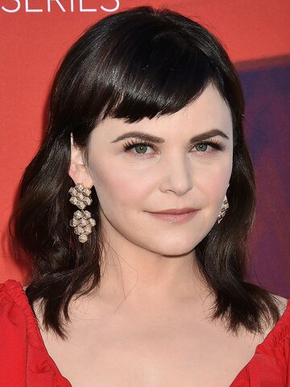
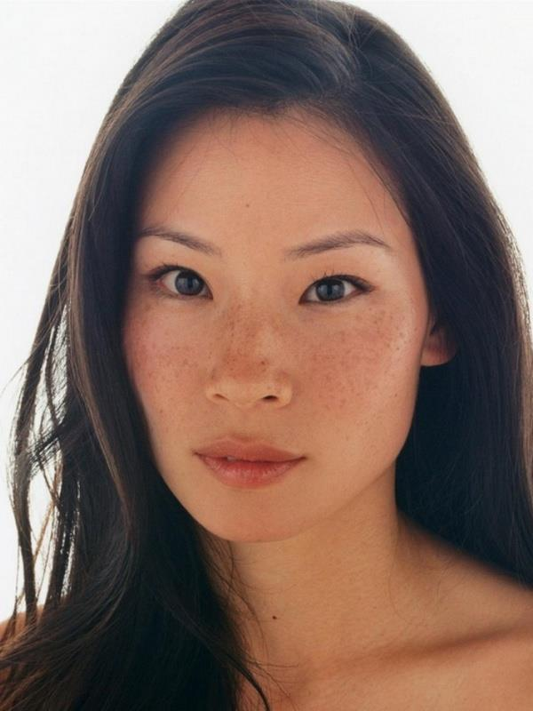
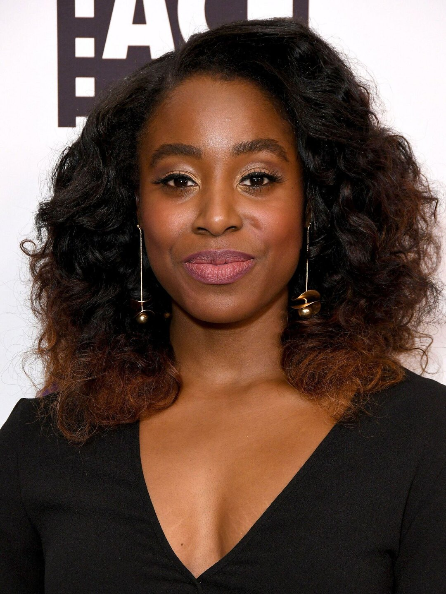
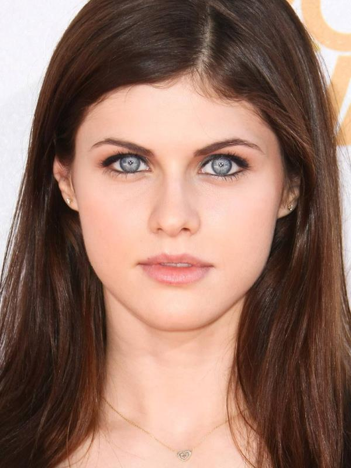
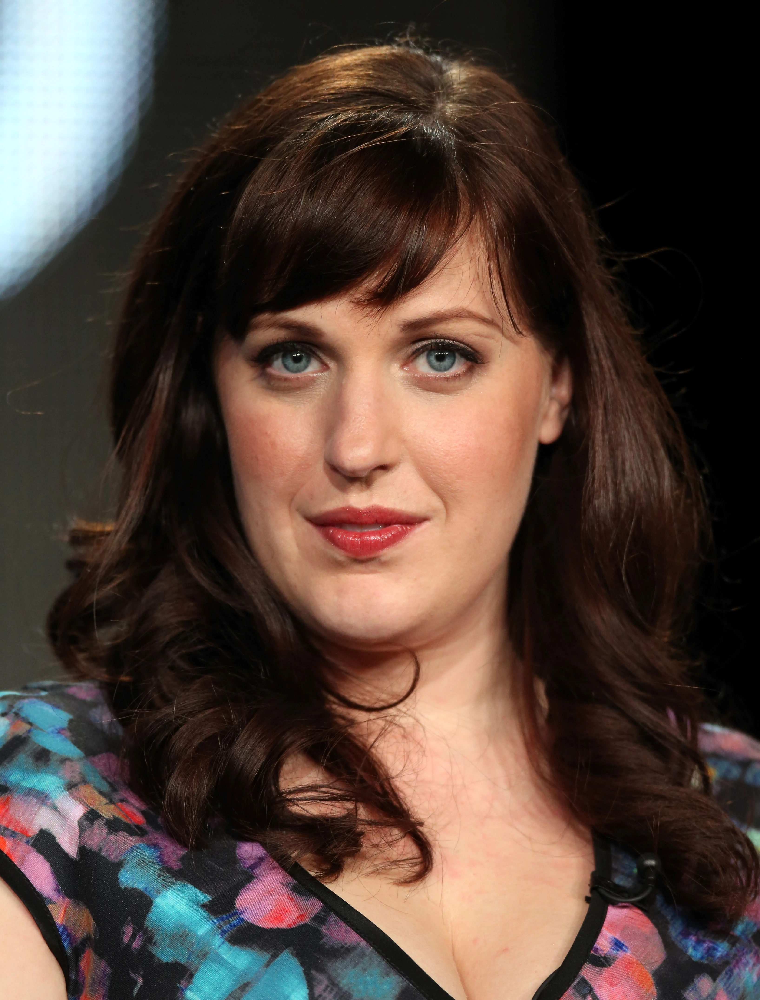
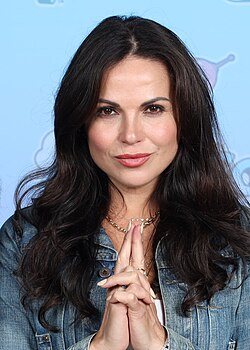
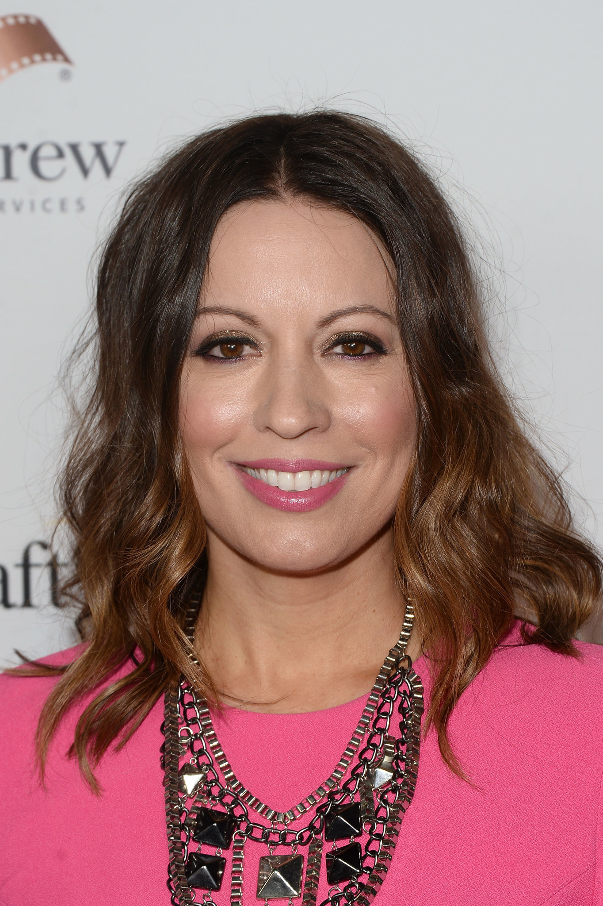
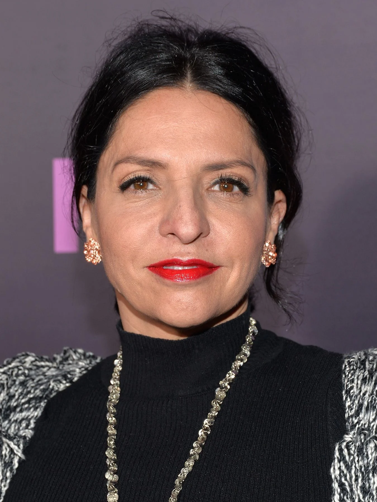

The cast of the series "Why Women Kill" (Why Women Kill) completely changes in each season, as it is an anthology show.
| Ginnifer Goodwin | Lucy Liu | Kirby Howell-Baptiste | Alexandra Daddario |
|---|---|---|---|
 |
 |
 |
 |
| as Beth Ann Stanton 60s housewife |
as Simona Grove 80s socialite |
as Taylor Harding 2019 lawyer |
as Jade Taylor & Eli's lover |
| about her | about her | about her | about her |
| Allison Tolman | Lana Parria | By Kay Cannon | Veronica Falcon |
|---|---|---|---|
 |
 |
 |
 |
| as Alma Fillcot housewife |
as Rita Castillo garden club president |
as Dee Fillcot Alma's daughter |
as Catherine Castillo Rita's stepdaughter |
| about her | about her | about her | about her |